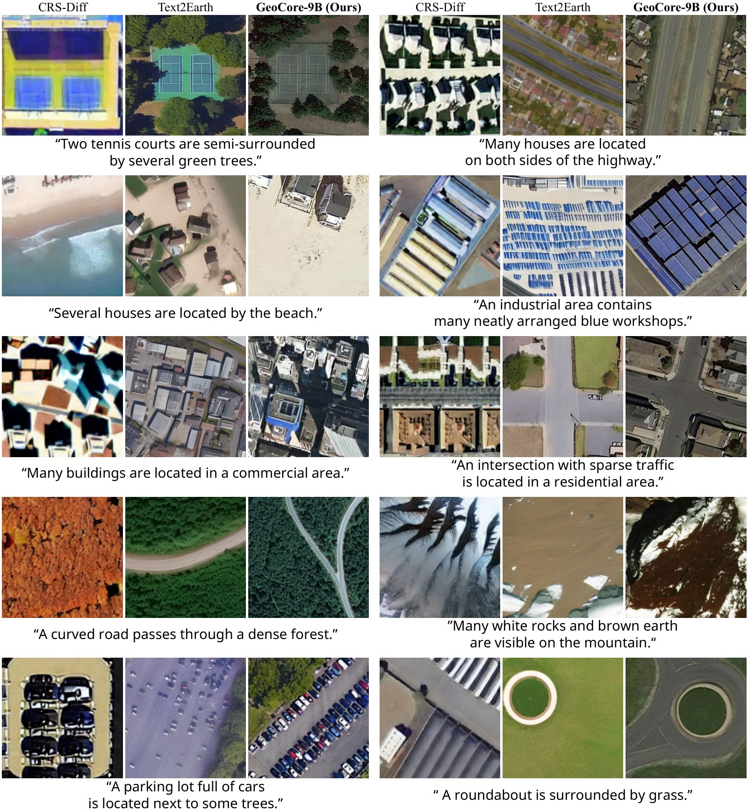
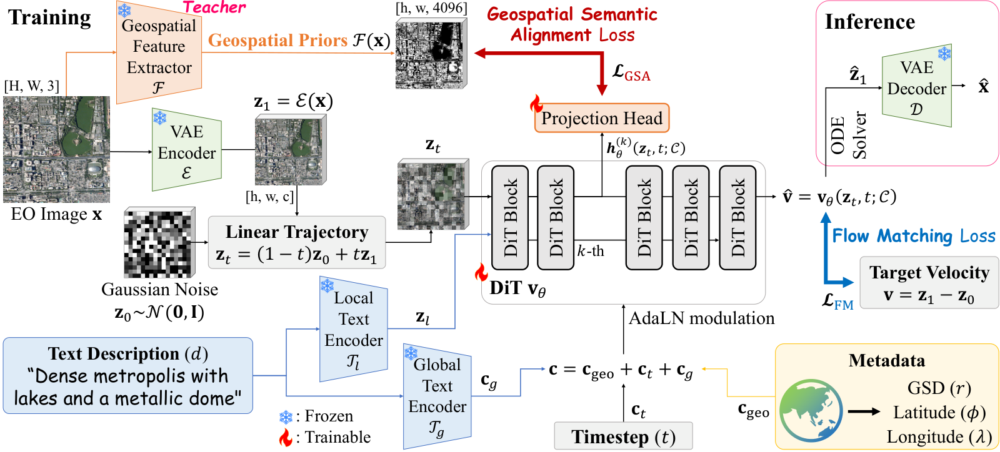
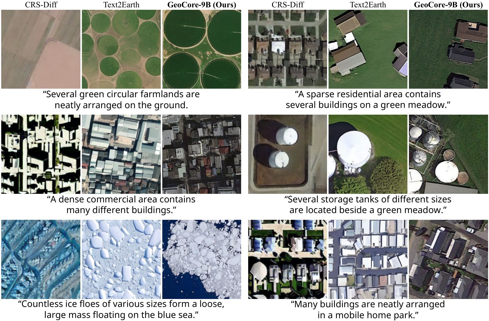
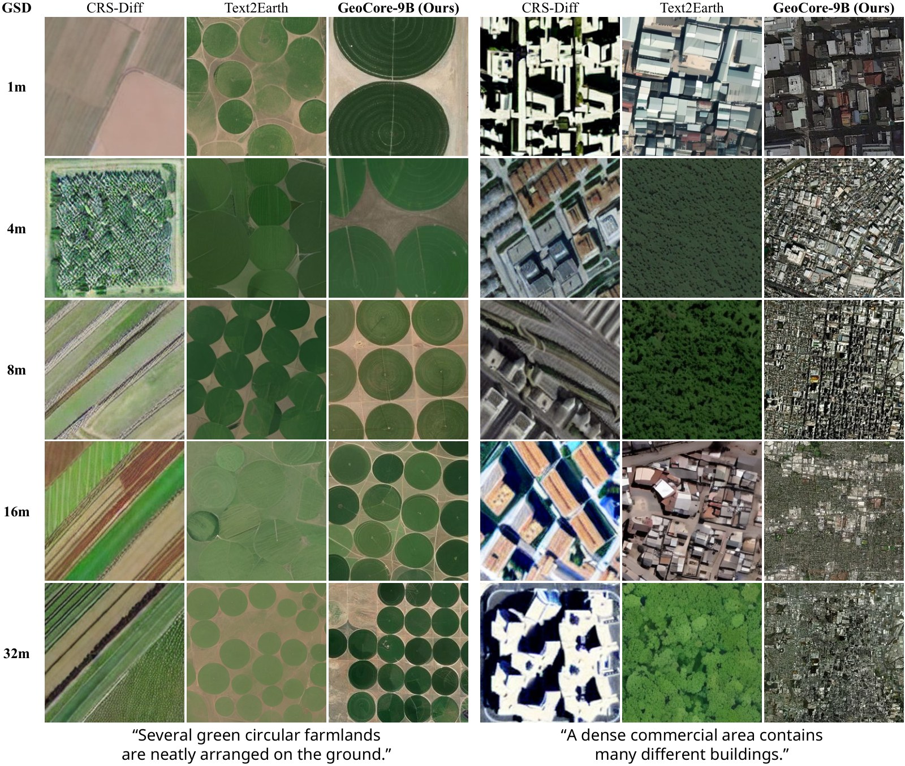
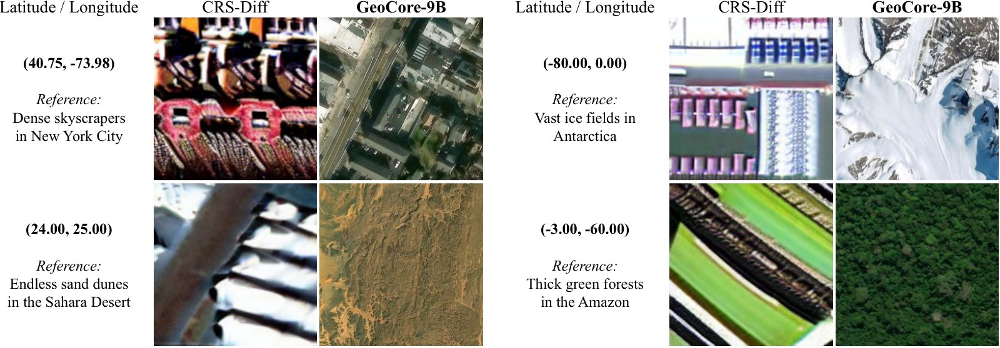
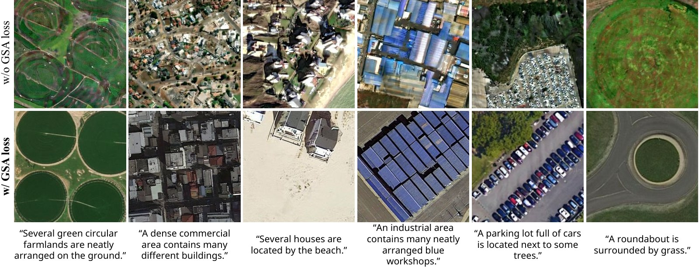

Towards Geo-Aware Generative Foundation Models in Earth Observation
Korea Advanced Institute of Science and Technology (KAIST)

Existing generative models for earth observation (EO) predominantly rely on fine-tuning natural image priors, which limits their scalability and introduces perspective biases that conflict with geospatial constraints. To address this, we introduce GeoCore-9B, a 9-billion-parameter generative foundation model, which is the first of its scale to be trained from scratch exclusively on EO data. Unlike previous EO foundation models, GeoCore-9B is built upon a Flow Matching-based Diffusion Transformer (DiT) and natively conditions generation on text descriptions and continuous geospatial metadata, including ground sample distances, latitudes, and longitudes. To overcome the convergence and spatial disorientation challenges of training at this scale, we propose a Geospatial Semantic Alignment loss. This objective distills structural Earth surface priors (e.g., terrain and urban areas) from a frozen specialist teacher network, constraining the diffusion latent trajectory during training without adding inference overhead. Pre-trained on the global-scale Git-10M dataset, GeoCore-9B demonstrates strong downstream versatility.
A Flow Matching DiT trained from scratch on EO imagery, conditioned jointly on language and physical geography.

Intermediate DiT tokens at block k = 8 are projected into the feature space of a frozen DINOv3-Sat teacher and aligned with its dense structural representations, weighted by μ = 0.5. Both the teacher and the projection head exist only during training, so inference cost is unchanged.
Ground sample distance, latitude and longitude are each encoded as sinusoidal features and projected by separate MLPs. Their sum joins the timestep and pooled text embeddings to modulate the DiT through AdaLN.
Missing metadata is not zeroed. Each field has its own learned null embedding, which also implements classifier-free guidance dropout, so every condition remains optional at sampling time.
| Parameters | 9.24 B |
|---|---|
| Backbone | Flow Matching DiT — 8 double-stream + 24 single-stream blocks, hidden 4096, 32 heads |
| Conditioning | CLIP + T5 text embeddings, GSD, latitude, longitude |
| Pre-training | Git-10M, 300K steps, global batch 1024, AdamW lr 1e-4, bf16, DeepSpeed ZeRO-2 |
| Hardware | 8× NVIDIA B200, ~15 days |
Given a text description, GeoCore-9B produces orthographic satellite imagery that follows the prompt while keeping the scene layout physically plausible.

Holding the prompt fixed while varying the GSD condition. Visual granularity adapts to the requested physical scale, from fine structural detail at 1 m to broad land-cover patterns at 32 m.

With no text prompt at all, conditioned only on latitude and longitude. GeoCore-9B recovers the land cover characteristic of each location, indicating that geography is encoded directly rather than inferred from language.

Removing the Geospatial Semantic Alignment objective degrades structural fidelity — buildings, road networks and terrain lose coherent geometry.

Weights and code are public. Sampling takes a prompt plus optional geospatial metadata.
git clone https://github.com/KAIST-VICLab/GeoCore-9B
cd GeoCore-9B && pip install -r requirements.txt
python inference.py \
--ckpt /path/to/GeoCore-9B --vae /path/to/ae.safetensors \
--prompt "A satellite view of a highly dense urban city with towering skyscrapers" \
--lon 126.97 --lat 37.56 --res 0.0 \
--num-samples 4 --out samples/@article{do2026geocore,
title = {GeoCore-9B: Towards Geo-Aware Generative Foundation Models in Earth Observation},
author = {Do, Jeonghyeok and Kim, Munchurl},
year = {2026}
}